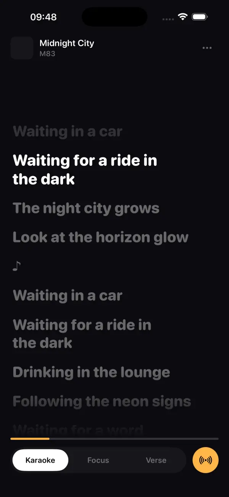
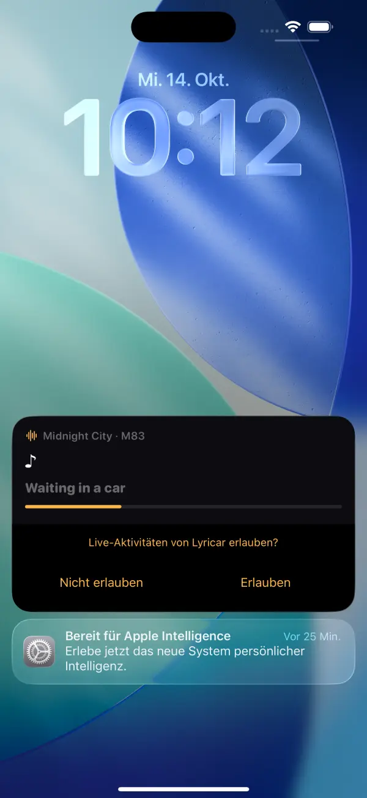
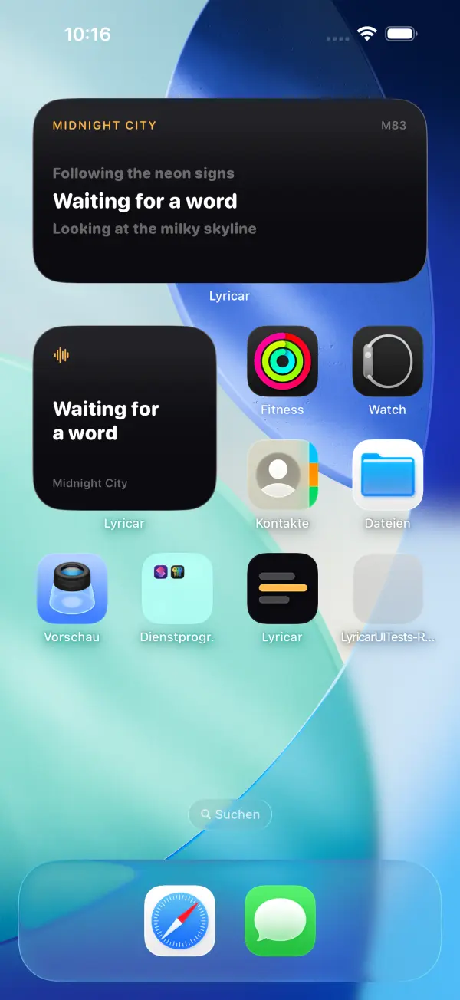
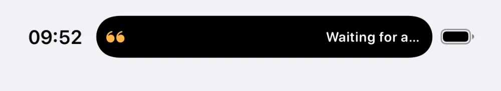
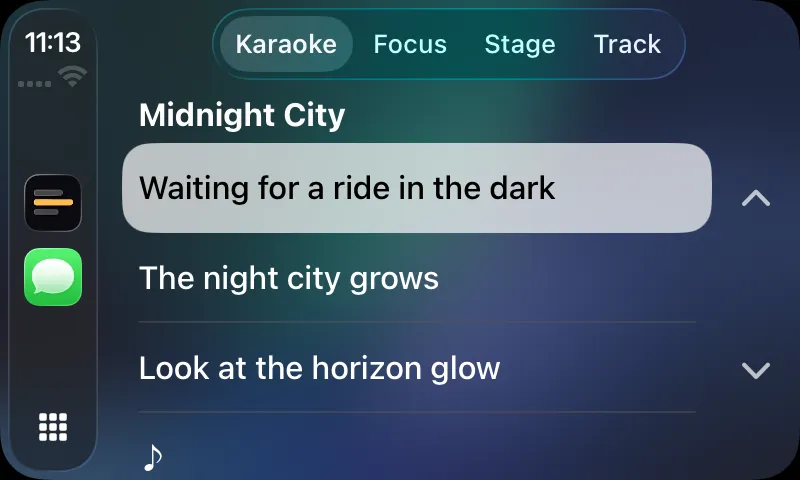
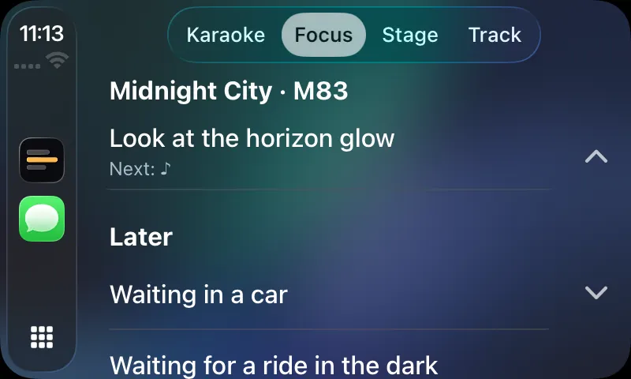
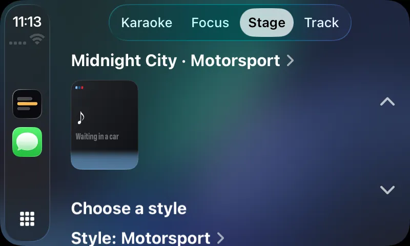
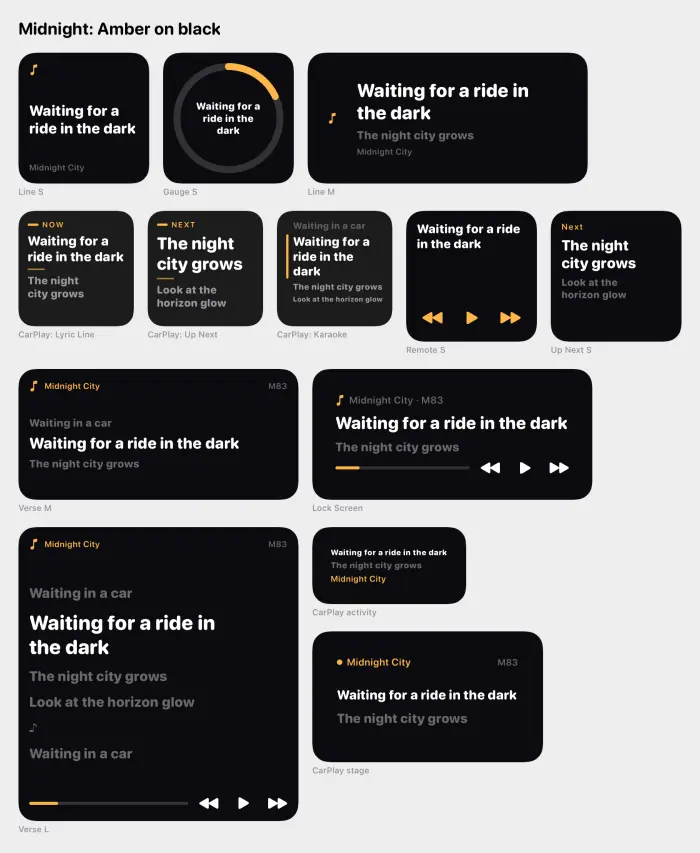
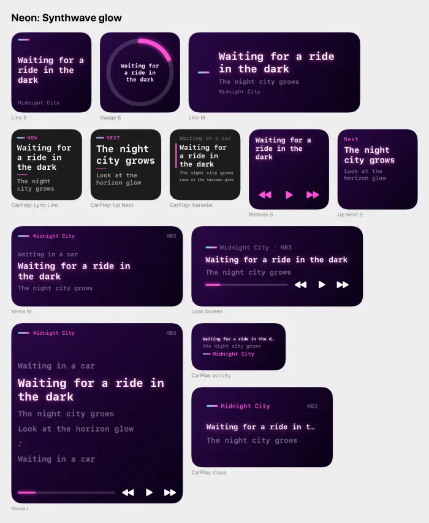
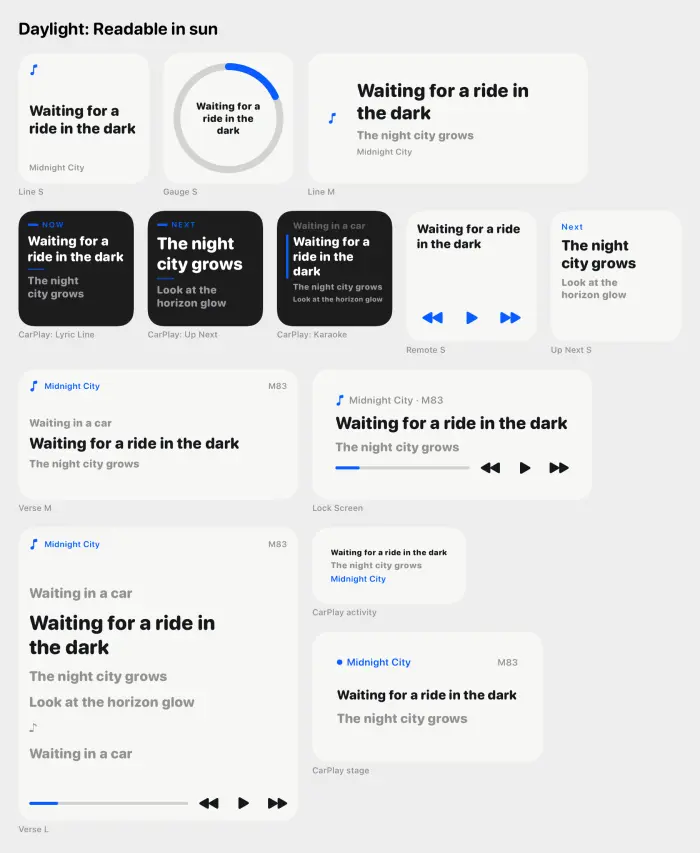

Lyricar
Open source, iOS 26, Apache-2.0
Sing along to whatever Spotify is playing.
Synced lyrics for whatever is playing on your Spotify, on the iPhone, the Lock Screen, the Dynamic Island, widgets and CarPlay.
Get the source
git clone https://github.com/noluyorAbi/lyricar.gitNot on the App Store. You build it with Xcode 26 and your own Spotify developer app.
Everywhere the song is
Real screenshots from the app, the widgets and the CarPlay Simulator.




CarPlay



Eight styles, three of them here



How it works
Lyricar asks Spotify what is playing, once per second while the app is visible, and fetches line-synced lyrics for that track from LRCLIB, a public lyrics database that needs no key. Between polls a local 10 Hz clock moves the highlight, so the current line stays in step; the sync tests hold the clock within 60 ms of the true position.
You sign in to Spotify with PKCE, so there is no client secret, no backend and no analytics. Your phone talks to Spotify and to LRCLIB, and to nothing else.
No secret, no backend, no analytics.
What you get
-
Karaoke on the iPhone
The current line lights up as it is sung. Tap any line to seek there, and nudge a track a little later or earlier if its timing is off.
-
Lock Screen and Dynamic Island
A Live Activity carries the current line onto the Lock Screen and into the Dynamic Island. iOS 26 also shows it on the CarPlay dashboard.
-
Five widgets
Lyric Line, Up Next, Remote, Verse and Gauge. Their buttons work even with the app terminated.
-
A CarPlay app
Karaoke, Focus, Stage and Track tabs, built for a glance at the screen in the car.
-
Eight styles
Midnight, Motorsport, Night Drive, Panoramic, Sport, Luxe, Neon and Daylight, applied across the app, the widgets and CarPlay.
-
Nothing in between
Spotify PKCE sign-in and the public LRCLIB API. No server of ours, no account, no tracking.
Build it yourself
You need a Mac with Xcode 26, Homebrew, and a Spotify developer app of your own.
-
Clone
Get the source.
git clone https://github.com/noluyorAbi/lyricar.git && cd lyricar -
Generate the project
XcodeGen writes the Xcode project; the setup script asks for your Spotify client ID and signing details.
brew install xcodegen && ./scripts/setup.sh -
Open and run
Pick your iPhone or a Simulator and press Run.
open Lyricar.xcodeproj
Your Spotify app stays in Development Mode: up to 5 users, and its owner needs Spotify Premium. The README has every step.
Honest limits
- Not on the App Store. You build and install it yourself from source.
- Bring your own Spotify developer app. It runs in Development Mode: up to 5 users, and the app owner needs Spotify Premium.
- CarPlay in a real car needs Apple's CarPlay audio entitlement. Without it, the CarPlay app runs in the Simulator.
- Lyrics come from LRCLIB. If LRCLIB has no synced lyrics for a track, there is nothing to sync.
- Spotify is polled while the app is visible. Once per second, with a local clock filling the gaps.